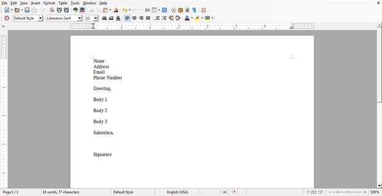
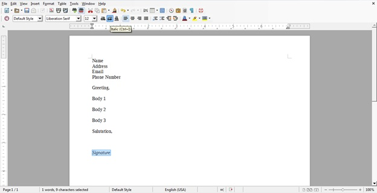

Create a letter in LibreOffice using the word processor, Writer.
Pre-requisites
1 computer with LibreOffice
Steps
Open LibreOffice either from the Start menu or the desktop icon.
Using the menu bar on the left, select Writer Document.
NOTE: This will open a blank, untitled Writer screen.
Under File in the Menu toolbar, click Save As.... Enter the desired filename of your letter and click Save.
Insert the appropriate header, greeting, body, salutation, and signature for your letter (Figure 5).
NOTE: Remember to save frequently while you work by clicking File: Save.

Figure 5: The general structure of a letter outlined in LibreOffice Writer.
Use Writer toolbars to format your letter to the desired form, e.g. italicizing the signature (Figure 6).

Figure 6: Using Writer toolbars to format the signature (highlighted) of a letter to be italicized.
Click File: Save to save your final letter.
NOTE: The keyboard shortcut "Ctrl + S" can also be used.